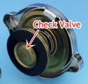
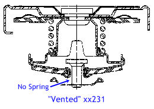

Go Home
Site Map
Go Home
Site Map
What radiator/thermostat caps do I use? Why?
I broke this out of the coolant fill article hoping more people would be made aware of the Stant catalog error.
Warning! There is an error in Stant old listings. Which means all catalogs, including some brands catalog, listing Stant parts share the same error. The correct caps for Fiero are Stant part numbers 10230 or 10330 non-vented caps.
I've just checked (12/2010) Stant and Advance Auto... both list 10230 (normal SWIV-EL cap) and 10330 (LEV-R-VENT cap) but Stant web site also list 18231 (Performance Caps) and it's a vented one so watch it.Got typo fix? How? Short story version... A PFF member got hold right people at Advance Auto. Advance complains to Stant. Stant said yes, numbers listed are wrong. Stant change numbers to right ones. Remember Stant makes many OEM caps for car makers. If they agree the old numbers are wrong... The old numbers are wrong.
Update Note: First 3 digits are unimportant for this article as those digits say model is a Lev-r-vent, regular, etc. We care about last 2 digits, so xxx30 or xxx31. (Old page were xx230 etc but Stant change the numbers some.)
You want to use a 15-16psi cap as recommended by OE specs. There are 2 very important reasons for this. (We'll get to vented vs non-vented in a minute.)
The radiator cap along with the coolant product determines the boiling point of the filled system. A 15psi cap increases boiling point about 45oF vs no cap. Lower system pressure and the coolant will boil at a lower temperature.
The cap effects water pump efficiency and life by controlling cavitation. When you spin the water pump it forms areas of low pressure around the impeller. This low pressure makes air dissolved in the coolant, and even the coolant itself, explode into bubbles. These bubbles cause turbulence in the water so it's harder to pump. Cavitation also damages the water pump by giving the impeller a rough surface that reduces its efficiency permanently. Coolant under pressure is less likely to cavitate and is therefore easier to pump around the system. Life of the water pump is also increased.
There are low pressure, usually 13#, caps out there. They often get installed on old weak systems to prevent popping the radiator tubes, etc. These caps often cause other problems, like easy over heating, and should only be used as a temporary item. Long term use of these caps can cause damage to the water pump impeller. They are only a little better than a bad cap.
GM & AC Delco caps.
Sorry but I've dung into the Stant Ecat, 22P and finally check numbers below (11/2014) and
found/confirm the problem...
22P list 10036879 and numbers listed here are Vented caps and wrong.
Thanks to "Two88GTs," the current GM and AC Delco cap numbers for Fiero are:
Rad Cap
AC Delco: RC27
GM : 10409635
Thermo Cap
AC Delco: RC40
GM: 6410941
"The p/n for the RC27 in my parts book is 10036879 which is still a valid number in the GM parts system but it is for the OLD design cap, and the remaining stock is indeed OLD. Get the 10409635."
Catalogs listing Vented caps
While many think factory books equal a car's bible... The sad news is Service and Parts books often have errors. In this case the "error" is because GM listed Vented radiator cap in 22P parts book. GM might have screwed up to list vented caps in 22P but the problem is that ACdelco and evenyone else just shows the same data. Might even installed them at factory. Is not only time or even close to first time GM did this type of error. Sometimes these errors are fix thru Technical Service Bulletins to update whatever book. Many times never.
Examples:
GM used the same engines in FWD cars so maybe someone at GM copy/past the vented caps
and no-one bothered to check the vented caps are good for Fiero. The vented
caps do work many times but can be big trouble when the system is not 100% sealing
out air.
Fiero Service Manual for 1986 has "wrong" rear brake section because someone copy/past that section from another book.
Many TSBs are updates for the Service Manual but not this time. You need 87 FSM to see correct rear brakes.
This shit happens
in the auto parts business. Unless GM tells Stant and others the catalog are incorrect, which
isn't likely, the error will probably never be fixed. (Finally Fixed in new Stant catalog! 12/2010) Use a Non Vented cap from Stat or any brand.
Vented vs. Non Vented and why they matter in Fiero.
 The Stant xxx31 cap is what everyone has been calling a "vented" cap. The xxx30 is what has been called a "non-vented" cap. The difference is the check valve, that dime size metal disk on the cap. On the vented cap, the check valve is simply hanging loose. On the non-vented cap, the valve has a small spring holding it tight to the seal.
The two caps are identical in all other ways. In fact on cars with DEX-COOL, GM recommends all vented caps be replaced with non-vented. (In that case it is intended to help reduce coolant contamination...)
A bit of background
In the Fiero cooling system, the radiator and more importantly it's filler neck, are not the highest point in the system. Some coolant in the engine is above the radiator neck. Exactly how much coolant is above that level depends on which engine is involved.
When the system is cool, this layout creates a slight vacuum in the engine. In a perfect system this isn't a problem but what happens when there is a microscopic air leak or the rear of the car is jacked?
The problem with the vented cap is that if there is even a tiny air leak in the system then coolant can drain through the cap and out the overflow line to the reserve tank. This happens because the flow rate is too slow to push the check valve shut.
If the cooling system were perfectly sealed then this wouldn't be much of an issue. In reality there is often some tiny spot that leaks air even if no coolant is getting by. The reason this problem usually doesn't show up when you open the thermostat housing is that the sudden flow pushes the check valve of a vented cap shut and holds it there. The problem will only show up under a slow leak condition.
When the car is tipped nose down, we add another issue. Coolant is heavy and wants to run down hill. This increases the vacuum back in the engine. Even if the cooling system is perfect with no leaks to let in air, we run into a design problem with the water pump seal.
The water pump seal is designed mainly to keep pressure in the system. It's often not designed to deal with the amount of vacuum that the Fiero cooling system can develop when it pointing nose down. Air is literally sucked past the pump seal by the coolant running down hill. Again, we have a slow flow of coolant, so the vented cap check valve may not close when this happens.
The non-vented cap prevents this simply because it has a sprung check valve. All the shifting coolant can do is push it tighter against the seal.
Why is there such a big load with the nose pointed down?
Well, one reason is that for a small car, Fiero has a big cooling system. About 14 U.S. Quarts, or 3.5 Gallons of coolant, compared to 6-9 quarts used in many other cars and light trucks. That's a lot of weight. Measure it yourself, put a gallon of water and a gallon of antifreeze on a scale at the same time to simulate a 50/50 mix. The Fiero system has nearly twice that weight in it.
The other big factor is the length of the system.
Keep in mind that a fluid always wants to seek level height. If it can't find level where it is, it will run down hill to someplace where it can.
Normally, the difference between the radiator cap and the highest point in the system is measured in inches. When parked nose down the height difference can get pretty big. Depending on the angle, you could have most of the volume of the cooling system pulling a vacuum in back. If the seals in the engine can't take the vacuum, the water runs downhill and out the vented cap.
The thermostat cap keeps sticking...
This is annoying to say the least. To prevent this, clean the thermostat neck and coat the rim with a silicone product like Brake Grease. Coat anything the cap touches or covers. Brake Grease won't wash out easy and it won't damage the rubber seal on the cap.